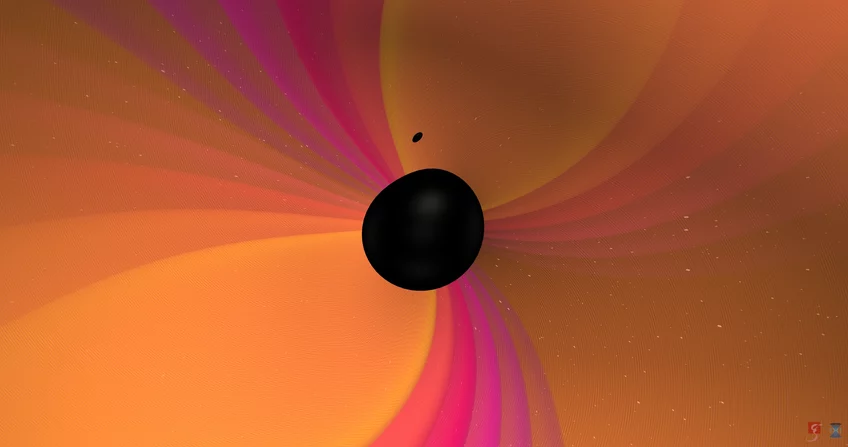

Binary Black Hole Mergers and Their Cosmological Significance:
A Review of Formation Channels, Observational Signatures, and Future Prospects"
Abstract:
The detection of gravitational waves from binary black hole mergers has revolutionized astrophysics, offering a direct probe into the life cycles of massive stars and the behavior of gravity in the strong-field regime. While these observations confirm key predictions of general relativity, they have also exposed tensions in our understanding of stellar evolution and compact object formation—particularly in the observed black hole mass spectrum, spin alignments, and merger rates. This article provides a critical synthesis of the current observational landscape, with a focus on the astrophysical implications of gravitational wave events for black hole population modeling and cosmology. We highlight emerging challenges to standard stellar evolution theories and discuss how upcoming detectors such as LISA and the Einstein Telescope may resolve persistent uncertainties and deepen our understanding of the cosmic evolution of black holes.
This high-resolution simulation illustrates the coalescence of two black holes with a significant mass ratio—one being 9.2 times more massive than the other. The visualization captures the inspiral, merger, and ringdown phases, highlighting the gravitational waves emitted during the event.
Introduction
The direct detection of gravitational waves by the LIGO observatories in 2015 marked a paradigm shift in observational astronomy. For the first time, astronomers could observe astrophysical phenomena through spacetime itself, rather than electromagnetic radiation. The gravitational wave event GW150914, caused by the merger of two stellar-mass black holes, not only confirmed Einstein’s long-standing prediction but also unveiled a population of massive black holes that had previously gone undetected. Since then, dozens of binary black hole mergers have been recorded, revealing a population with unexpected masses, spin orientations, and redshift distributions.
These observations have opened a new frontier in high-energy astrophysics. Unlike traditional surveys, gravitational wave detections are unbiased by dust extinction or luminosity limits, making them a powerful tool for probing compact objects across cosmic time. Yet, with each new detection, the complexity of the underlying black hole population becomes more apparent. Black holes in the so-called “pair-instability mass gap” have been observed; spin measurements are often inconsistent with isolated binary evolution; and inferred merger rates challenge both stellar and dynamical formation channels.
This article aims to critically examine what gravitational wave observations have revealed so far about the life cycles of massive stars and the assembly history of black holes. By evaluating the current landscape of data and modeling efforts, we seek to identify where our theoretical frameworks succeed—and where they break down. We also explore the implications of black hole merger observations for cosmology, particularly in the context of Hubble constant measurements, early-universe structure, and the nature of gravity itself.
Black Hole Mergers: Observational Status and Open Questions
Gravitational wave observations have transformed our understanding of stellar-mass black holes, revealing a population with a far wider range of properties than anticipated from electromagnetic surveys alone. Since the first detection, the LIGO-Virgo-KAGRA (LVK) collaborations have published multiple observing runs, with catalogs such as GWTC-1, GWTC-2, and GWTC-3 reporting tens of binary black hole (BBH) merger events. These detections provide a statistical foundation for probing black hole mass distributions, spin orientations, and the underlying astrophysical formation channels. However, several surprising features in the data remain unexplained and are the subject of ongoing theoretical revision.
Mass Distributions and the Pair-Instability Mass Gap
Stellar evolution theory predicts that black holes formed from the direct collapse of massive stars should be bounded in mass due to pair-instability supernova (PISN) processes. In this framework, stars with helium core masses in the range of approximately \( 64\text{–}135\ M_\odot \)
are expected to undergo explosive disruption without forming a remnant, creating a "mass gap" in the black hole mass function. However, detections such as GW190521, with component masses of \( \sim 85 \ M_\odot \quad \text{and} \quad \sim 66 \ M_\odot \)
, challenge this picture directly.
Several interpretations have been proposed:
- Hierarchical mergers: Black holes formed from previous BBH mergers in dense stellar environments may attain masses above the PISN limit.
- Rapid stellar rotation or low metallicity: These factors can suppress mass loss and shift the boundaries of pair-instability.
- Alternative formation channels: Primordial black holes or physics beyond the Standard Model may play a role.
The existence of mass-gap black holes remains one of the most striking inconsistencies between theory and observation. Resolving this requires a combination of improved waveform modeling, more precise mass measurements, and population synthesis that accounts for dynamical environments.
Spin Magnitudes and Orientations- Black hole spins provide an important diagnostic of their formation history. In isolated binary evolution, tidal interactions and mass transfer are expected to produce aligned or nearly aligned spins. In contrast, dynamical formation in globular clusters or galactic nuclei often leads to isotropic spin orientations.
LVK measurements of the effective spin parameter (\( \chi_{\text{eff}} \)
)—a projection of the mass-weighted spin vectors onto the orbital angular momentum—have shown that many detected systems are consistent with low or even negative \( \chi_{\text{eff}} \)
, implying spin-orbit misalignment. Notably, several events (e.g., GW170104) suggest substantial spin tilts.
These findings favor dynamical formation for a significant fraction of BBH systems. However, spin inference is still limited by waveform degeneracies and detector sensitivity. With upcoming detectors like LISA, it may become possible to measure spin precession and orbital eccentricity more precisely, enabling clearer discrimination between formation pathways.
Merger Rates and Environmental Constraints
The LVK collaborations estimate local BBH merger rates to be in the range of \( 15\text{–}60\ \text{Gpc}^{-3}\ \text{yr}^{-1} \)
, a value broadly consistent with both field binary and dynamical formation models, but with considerable uncertainty. Current rates do not decisively rule out any specific channel, but discrepancies remain:
- Some population synthesis models underpredict observed rates unless metallicity-dependent star formation histories or common envelope efficiencies are tuned.
- Dynamical channels such as globular cluster interactions or AGN disk migration can reproduce both rates and spin properties, but struggle to explain all features without fine-tuning.
- The redshift evolution of the merger rate, still poorly constrained, holds the key to distinguishing between early- and late-time formation channels.
Longer-baseline observations and better redshift coverage (especially through joint EM-GW detections) are essential for narrowing these uncertainties.
As black holes spiral closer together, the frequency of their gravitational waves increases. (Image credit: LIGO)
Implications for Stellar Evolution
Gravitational wave detections of binary black hole (BBH) mergers have prompted a reassessment of classical stellar evolution models, especially regarding the final stages of massive star lifecycles. The distributions of mass, spin, and merger rates inferred from GW events challenge the completeness of existing binary population synthesis codes and call for a re-evaluation of assumptions related to mass loss, core-collapse supernovae, and common-envelope (CE) evolution.
Binary Evolution and the Common Envelope Phase
Standard isolated binary evolution posits that black hole binaries form through sequential mass transfer episodes, culminating in a CE phase that tightens the binary orbit. However, the physics governing CE evolution remains poorly constrained, particularly for massive, evolved progenitors. Many population synthesis frameworks must invoke extreme values of CE efficiency (\( \alpha_{\text{CE}} \)
) to replicate observed merger rates.
The detection of heavy, close-orbiting black hole binaries suggests either:
- Unusually efficient CE ejection, or
- Alternative evolutionary channels that bypass CE altogether, such as chemically homogeneous evolution in rapidly rotating, low-metallicity stars.
Metallicity and Stellar Winds
Metallicity critically influences stellar wind mass loss rates. In low-metallicity environments, winds are weaker, allowing massive stars to retain more mass and potentially collapse into heavier black holes. This mechanism aligns with the high masses observed in many LIGO/Virgo events. However, the absence of precise host galaxy metallicity measurements limits direct validation. Multiband follow-up and improved localization are essential for mapping merger events to their stellar environments.
Dynamical Formation Channels
Gravitational wave data increasingly support the hypothesis that a significant fraction of BBH mergers occur in dense stellar environments, such as:
Globular clusters where binaries can form via three-body interactions and exchange encounters.
Nuclear star clusters and AGN disks which may host repeated interactions, enabling hierarchical mergers that generate second-generation black holes.
These channels explain features such as high mass, isotropic spin orientations, and possible eccentric orbits. However, reproducing observed rates requires finely tuned assumptions about black hole retention and cluster initial conditions.
On top: Estimated gravitational wave amplitude of GW150914 at the Hanford detector. Above that are the Schwarzschild horizons of both merging black holes shown as calculated numerically from the general theory of relativity. Below: The effective distance of the black holes in units of Schwarzschild radii RS and the relative velocity in units of the speed of light. [Image: LIGO / Redesign: Daniela Leitner]
Cosmological Implications of Gravitational Wave Astronomy
Beyond astrophysical insights, gravitational waves (GWs) are emerging as powerful cosmological probes, capable of independently measuring universal parameters and constraining early-universe physics.
Gravitational Waves as Standard Sirens
Binary neutron star (BNS) and neutron star-black hole (NSBH) mergers with electromagnetic (EM) counterparts serve as standard sirens—objects whose luminosity distance can be measured directly from GW data, bypassing the traditional cosmic distance ladder. The landmark event GW170817, associated with both a kilonova and a short gamma-ray burst, yielded:
\( H_0 = 70^{+12}_{-8} \ \text{km}\,\text{s}^{-1}\,\text{Mpc}^{-1} \quad \text{(Abbott et al., 2017)} \)
This value lies between Planck (CMB) and \( \text{SH}_{0}\text{ES (Cepheid)} \)
estimates, offering a model-independent anchor. As more BNS events are localized with redshift information, standard sirens could resolve the Hubble tension and test deviations from \( \Lambda\text{CDM} \)
.
Primordial Black Holes and Early Universe Structure
Several BBHs detected by LIGO/Virgo exhibit properties (e.g., high mass, low spin, absence of host galaxy) consistent with primordial black holes (PBHs)—hypothetical remnants of early-universe density fluctuations. If confirmed, PBHs could:
- Constitute a non-negligible fraction of dark matter
- Constrain non-Gaussianity in the primordial power spectrum
- Provide novel tests of inflationary scenarios
However, this interpretation remains speculative. Current data are insufficient to conclusively distinguish PBHs from stellar-collapse remnants, and stringent limits from microlensing and the CMB challenge their abundance.
Testing General Relativity in the Strong-Field Regime
General relativity (GR) makes precise predictions for the waveform morphology of BBH mergers. Any deviations in inspiral phase evolution, ringdown frequencies, or signal propagation speed could point to:
- Modifications to gravity at strong curvature
- A massive graviton
- Lorentz violations or extra dimensions
So far, no statistically significant deviations have been observed, and all detected signals are consistent with GR. However, future detectors with greater sensitivity may probe percent-level corrections or uncover subtle effects.
Future Prospects and Research Directions
Despite rapid progress, key challenges remain in detection, modeling, and interpretation.
Detector Upgrades and New Facilities
- LIGO A+, Virgo+, KAGRA upgrades will expand detection volumes by up to an order of magnitude.
- The Einstein Telescope (ET) and Cosmic Explorer (CE) will detect BBHs out to \( z \sim 20 \)
, accessing the realm of Population III stars.
- The space-based LISA mission will probe the milliHertz band, enabling detection of massive black hole mergers, extreme mass ratio inspirals (EMRIs), and early inspirals of stellar-mass binaries.
Modeling and Theoretical Needs
- Population synthesis tools (e.g., COSMIC, MOBSE, StarTrack) must incorporate improved treatments of stellar winds, CE evolution, and dynamical formation.
- Waveform models must include spin precession, higher-order harmonics, and orbital eccentricity to avoid parameter estimation biases.
Multi-Messenger Synergy
The synergy between GW and EM observations will enable richer physical inferences, particularly for:
- BNS mergers with short gamma-ray bursts or kilonovae
- Neutrino signals from core-collapse supernovae
- Host galaxy identification for redshift anchoring
These combined datasets will sharpen cosmological constraints and illuminate compact object formation pathways.
Black hole mass distribution (dashed green line) and a PDF (solid blue line) fit to the data. The black hole mass distribution is a "binless" histogram that we modeled by allowing each data point to be a Gaussian, where the black hole mass (converted from pitch angle measurements via Equation (6)) is the mean and the error bar is the standard deviation. The black hole mass distribution is then the normalized sum of all the Gaussians. The resulting PDF is defined by μ = 6.88 dex M☉, median = 6.94 dex M☉, σ = 0.67 dex M☉, skewness = −0.59, kurtosis = 3.61, and a most probable SMBH mass of log (M/M☉) = 7.07 with a probability density value of = 0.63 dex−1.
Conclusion
Gravitational wave astronomy has validated general relativity under extreme conditions while unveiling challenges to classical models of stellar evolution and black hole formation. The detection of massive black holes, anomalous spin distributions, and high merger rates suggests that our understanding remains incomplete. With next-generation observatories and refined modeling efforts, the field is poised to transform our understanding of the universe’s dark and dynamic sectors. What began as a test of Einstein's theory now offers a window into the hidden architecture of the cosmos.
My Research Vision: Hypotheses and Target Questions
Building on the preceding analysis, I outline several research directions that I am particularly motivated to explore:
Hierarchical Mergers: Are mass-gap black holes indicative of second-generation mergers in dense clusters? I aim to explore this using N-body simulations with post-Newtonian corrections.
Eccentricity as a Diagnostic:Can we use orbital eccentricity to distinguish formation channels? I intend to develop Bayesian pipelines incorporating eccentric waveform models like TEOBResumS or NRSur7dq4.
Latent Population Structure:Using hierarchical Bayesian methods (e.g., Dirichlet processes), can we infer subpopulations within BBH mergers based on spin, mass, and redshift?
Primordial Black Hole Candidates:Can we classify low-spin, high-mass, high-z BBHs with no host galaxies as PBH candidates using synthetic training sets?
Multi-Band Detection Forecasting:By combining LISA and 3G detector sensitivities, can we model early inspirals for long-leadtime alerts, especially for asymmetric or precessing BBHs?
This research space—at the confluence of theory, computation, and data analysis—is an ideal sandbox for hypothesis-driven inquiry. I am especially interested in using gravitational waves to constrain the microphysics of stellar collapse via macroscopic observables.
References:
1. Abbott, B. P., et al. (LIGO Scientific Collaboration and Virgo Collaboration). (2016). Observation of Gravitational Waves from a Binary Black Hole Merger. Physical Review Letters, 116, 061102. https://doi.org/10.1103/PhysRevLett.116.061102
2. Fishbach, M., & Holz, D. E. (2017). Where Are LIGO's Big Black Holes? ApJL, 851(2), L25. https://doi.org/10.3847/2041-8213/aa9bf6
3. Gerosa, D., & Berti, E. (2017). Are merging black holes born from stellar collapse or previous mergers? PRD, 95(12), 124046. https://doi.org/10.1103/PhysRevD.95.124046
4. Mandel, I., & Farmer, A. (2022).Merging stellar-mass binary black holes. Physics Reports, 955, 1–51. https://www.sciencedirect.com/science/article/abs/pii/S0370157322000175
5. The LIGO Scientific Collaboration, the Virgo Collaboration, & the KAGRA Collaboration. (2021). GWTC-3: Compact Binary Coalescences Observed by LIGO and Virgo During the Second Part of the Third Observing Run. arXiv:2111.03606.